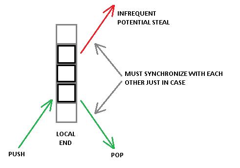
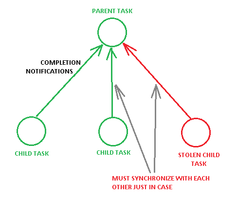

Task Scheduling Strategies
There are 4 main strategies for a fine-grained distributed dynamic task scheduling:
- Work-stealing. That's a reactive asynchronous strategy. The essence: when a thread is out work, it randomly chooses a victim thread and asynchronously tries to steal some work from it.
- Work-requesting. That's a reactive synchronous strategy. The essence: when a thread is out of work, it randomly chooses a victim thread and sends a synchronous request to it; the victim receives the request, and sends some work back (if any).
- Work-distribution. That's a proactive synchronous strategy. The essence: during submission of a new work, it's divided and proactively distributed to some threads (idle or lightly loaded).
- Work-balancing. That's a proactive asynchronous strategy. The essence: dedicated thread (or potentially one of the worker threads) periodically collects information about load of all worker thread, then calculates optimal distribution of work, and then re-distributes work among them.
It's worth noting that a scheduler may employ several (or even all of the) above strategies. Reactive strategies (stealing and requesting) deal with inevitable dynamic load imbalance; but usually have very limited local information about a system's state, so make sub-optimal decisions. Proactive strategies (distribution and balancing), on the other hand, have information about a system's state, so make one-shot optimal scheduling decisions; but unable to cope with inevitable dynamic load imbalance.s
A scheduler must employ at least one of the reactive strategies in order to cope with continuous and inevitable dynamic load imbalance, and optionally include one or both proactive strategies in order to cut down stealing/requesting costs. So, the general recipe for a scheduler is:
SCHEDULER = (STEALING ^ REQUESTING) [+DISTRIBUTION] [+BALANCING]
So we have to choose between work-stealing and work-requesting. Work-stealing has a serious advantage over work-requesting due to it's asynchronous nature: a thief thread is able to get some work, even if a victim thread is busy processing a user task or even de-scheduled by an OS. With work-requesting a thief thread is able to get some work only if a victim thread condescends to send it (which it is just unable to do if it is de-scheduled by an OS). While work-requesting is generally a bit simpler, because it's synchronous.
There are also 2 problems with work-stealing due to it's asynchronous nature. First, it inherently incurs some observable per-task overhead, because every pop operation from a thread's work deque must be synchronized with a potential asynchronous steal operation from another thread. Stealing is rare, but one still has to pay that price on every pop operation. The price is at least a single store-load style memory fence (MFENCE instruction for x86 architecture), or a single atomic RMW operation (LOCK prefixed instruction on x86). Here is an illustration of the problem:

Work-requesting is free of the problem. Task deque is completely local to a thread and requires no synchronization.
The second problem has similar nature and relates to a join phase of parallel algorithms. Traditional handling of task completion involves decrement of a pending child counter of a parent task. Due to asynchronous nature of work-stealing, the decrement has to be synchronized with other potential concurrent decrement operations. Here is an illustration of the problem:

Work-requesting is free of the problem. During execution of work-requesting protocol a victim thread can mark a parent task with a 'has_stolen_children' flag, and synchronization will be used only for such tasks. While great bulk of tasks will proceed without any synchronization.
However, I must emphasize that in general case work-stealing is more appropriate, because it is kind of more bullet-proof. You should employ work-requesting only if you know what you are doing… but you lose nothing for asking.
Work-distribution is relatively easy to implement and it may provide observable speedup in some contexts. For example, consider that we need to do per-element operation on an array. What we do is (1) determine number of currently idle worker threads, (2) evenly divide the array onto respective number of pieces, (3) directly assign the pieces to the threads. Now each thread has a good piece of work to start with. And if new worker threads will arrive and/or some worker threads finish sooner, work-stealing/requesting will take of that. Another good example is IO dispatching. Consider that a thread discovers a batch of IO readiness via select()/poll(). A good next step is to divide the batch evenly among idle threads, and assign the pieces directly.
Work-balancing is usually more cumbersome to implement. The idea is that a thread periodically or episodically polls load of all worker threads, and then optimally re-distributes tasks between threads. However, it can be useful for systems with badly structured work DAGs and with unpredictable load. As far as I know, Erlang scheduler employs work balancing, because I guess it may be too costly to leave it work-stealing - too many costly steals which get too small pieces of work.
Don't afraid, it's not actually that difficult. Here you may see an example of a real working task scheduler.